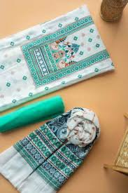

The word "unstitched" comes from the Latin word "unus," meaning "one," and "stitium," meaning "to sew." As a result, the unstitched fabric has been sewn together but has yet to complete. The term refers to material cut or torn to be sewn back together later.
